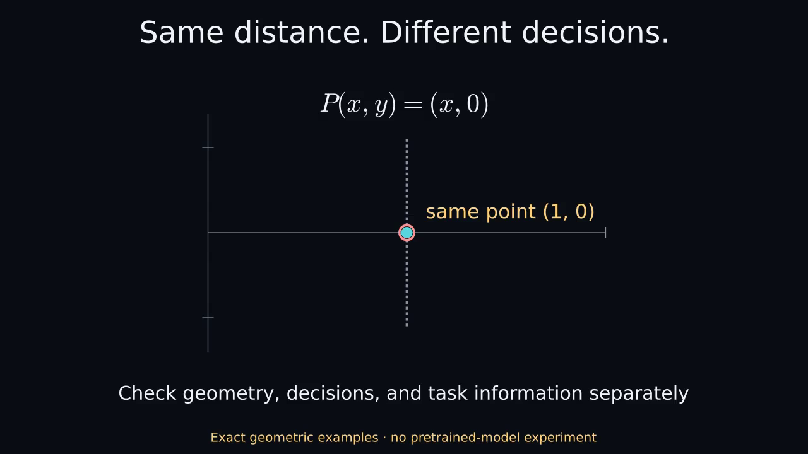

Same distance. Different decisions.
49.4-second narrated Manim illustration. Synthetic stock voice. EXACT GEOMETRY ILLUSTRATION · NOT A MODEL EXPERIMENT.
Static by default. Choose playback only if you want motion and sound. Captions use approximate sentence timing.

Download narrated MP4 · Complete text and visual explanation · Captions · Original silent version
Text and visual explanation
Same distance. Different decisions.
Narrated Manim concept video. 49.367 seconds.
Synthetic stock voice: Kokoro am_michael.
Sentence captions are approximate, not word-aligned.
EXACT GEOMETRY ILLUSTRATION · NOT A MODEL EXPERIMENT
0.000–11.567 seconds
Spoken: Move these two points by the same amount. Their distance stays unchanged, but their angles from the origin change, so their cosine similarity changes too.
Visual explanation: A=(1,0) and B=(0,1) both move by (2,2), ending at (3,2) and (2,3). Their Euclidean distance remains sqrt(2). Their cosine changes from 0 to 12/13, approximately 0.923. During the motion, distance and cosine are calculated from the current points.
11.567–24.700 seconds
Spoken: A fixed readout can change its decision after that shift. Adjusting the readout's bias restores the old scores here, but that's a second edit, not a property of translation alone.
Visual explanation: The fixed score x1-0.5 gives A=+0.5, B=-0.5 before translation and A=+2.5, B=+1.5 afterward. B crosses a zero threshold. Changing the bias to -2.5 restores +0.5 and -0.5, but this compensation is an additional operation.
24.700–37.900 seconds
Spoken: Projection does something different. These two points have different labels because of their vertical position. Remove that direction, and both become the same point. The distinction has been lost.
Visual explanation: The points (1,1), labeled positive y, and (1,-1), labeled negative y, are projected onto x. Both become (1,0). A classifier seeing only that projected point cannot perfectly distinguish these labels. The projection is hand chosen, not fitted PCA. Check pairwise geometry, downstream scores and task labels separately. These exact constructed examples are not results from a pretrained model and do not imply universal success or failure of component removal.
37.900–49.367 seconds
Spoken: These are exact geometry examples, not measurements from a trained model. Check the geometry, the downstream decision, and the task information separately.